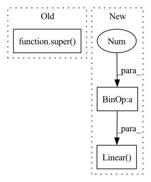

Pattern ID :1516

Before Change
expansion = 4
def __init__(self, in_planes, planes, stride=1):
super(Bottleneck, self).__init__()
self.conv1 = nn.Conv2d(in_planes, planes, kernel_size=1, bias=False)
self.bn1 = nn.BatchNorm2d(planes)
self.conv2 = nn.Conv2d(planes, planes, kernel_size=3, stride=stride, padding=1, bias=False)
After Change
super().__init__()
assert image_size % patch_size == 0, "image dimensions must be divisible by the patch size"
num_patches = (image_size // patch_size) ** 2
patch_dim = channels * patch_size ** 2
assert num_patches > MIN_NUM_PATCHES, f"your number of patches ({num_patches}) is way too small for attention to be effective. try decreasing your patch size"
self.patch_size = patch_size
self.pos_embedding = nn.Parameter(torch.randn(1, num_patches + 1, dim))
self.patch_to_embedding = nn.Linear(patch_dim, dim)
self.cls_token = nn.Parameter(torch.randn(1, 1, dim))
self.dropout = nn.Dropout(emb_dropout)
self.transformer = Transformer(dim, depth, heads, mlp_dim, dropout)
In pattern: SUPERPATTERN
Frequency: 3
Non-data size: 3
Instances
Fragment ID: 4012889
Project Name: cydia2018/vit-cifar10-pruning
Commit Name: 670fb581b519a0875681d2fbf4c4ec824e7fd9a3
Time: 2020-10-27
Author: meathouse47@gmail.com
File Name: models/vit.py
Class Name: Bottleneck
Method Name: __init__
Parent Class: nn.Module
Fragment ID: 4012888
Project Name: feng-lab/pytorch-image-models
Commit Name: be99eef9c14fe63a2ebf3cdd2784d16140851004
Time: 2021-05-20
Author: rwightman@gmail.com
File Name: timm/models/twins.py
Class Name: GroupAttention
Method Name: __init__
Parent Class: nn.Module
Fragment ID: 4012887
Project Name: shaoeric/torch-atom
Commit Name: 87af6f2da4a9d8d8cd3710b0c643085ab8abbec6
Time: 2022-03-06
Author: shaoeric@foxmail.com
File Name: src/models/resnet.py
Class Name: ResNet
Method Name: __init__
Parent Class: nn.Module